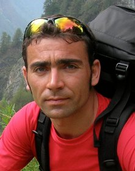

Latest News
- Official online live session:
- Will take place on Monday, September 27, 14:00-16:00 CEST
- Hall 9 of the gCon virtual conference system
- 1 hour of presentations + 1 hour of round table
- Registration is mandatory (link to IROS website)
Contents of the live sessions
- Unofficial online live session - Tuesday Sept. 14, 14:00 CEST on Teams:
- Dr. Júlia Borràs (CSIC - Universitat Politècnica de Catalunya) "Encoding cloth manipulation tasks as graphs of states and transitions"
- Pr. Chedli Bouzgarrou (Institut Pascal - SIGMA Clermont) "Approaches for robotic manipulation in MROD project"
- Pr. Dmitry Berenson (University of Michigan) "Planning and control with unreliable dynamics models for deformable object manipulation"
- Q&A and discussion with speakers
- Official online live session - Monday Sept. 27, 14:00 CEST on gCon virtual conference system:
- Chia-Yu Tsai (TU Delft) "Wrinkle contraction direction: a useful feature for learning robotic fabric manipulation from demonstration"
- Daniel Seita (Carnegie Mellon University) "Initial Results on Grasping and Lifting Physical Deformable Bags with a Bimanual Robot"
- Round table with all participants
On-demand materials
-
Pr. Kaspar Althoefer
Queen Mary University of London
Tactile sensors for robot hands: Towards intelligent manipulation of soft objects
-
Pr. Dmitry Berenson
University of Michigan
Planning and control with unreliable dynamics models for deformable object manipulation
-
Dr. Júlia Borràs
CSIC - Universitat Politècnica de Catalunya
Encoding cloth manipulation tasks as graphs of states and transitions
-

Pr. Chedli Bouzgarrou
Institut Pascal - SIGMA Clermont
Approaches for robotic manipulation in MROD project
-
Pr. Christian Duriez
Inria Lille - University of Lille
Towards soft robots manipulation through model-based sensing and control
-
Pr. Pablo Gil
University of Alicante
Tactile perception to detect interaction and accomplish a stable grasping
-
Pr. Yan-Bin Jia
Iowa State University
Grasping and cutting of deformable objects
-
Pr. Youcef Mezouar
Institut Pascal - SIGMA Clermont
SoftManBot: Advanced robotic technology for handling soft materials in manufacturing sectors
-
Pr. David Navarro-Alarcon
The Hong Kong Polythechnic University
Behold, I teach you visual shape servoing
-

Pr. Gianluca Palli
University of Bologna
The REMODEL project: Current challenges and novel approaches for automation in wiring industry
-
Dr. Diego Perez Losada
Dionisis Andronas
AIMEN - University of Patras
Simulation for enhanced perception and planning
-
Pr. Hesheng Weng
Shanghai Jiao Tong University
Vision-based automatic control of deformable objects
Scope and Objectives
Deformable objects are encountered in a wide variety of industrial, service and health applications. However, robotizing tasks that involve deformable objects requires specific contributions, as the behavior of such objects affects all aspects of a robotic system: perception, actuation, planning and control.
In particular, it seems to the organizers that planning, control and perception require significant contributions, since the usual tools that apply for rigid body manipulation in those fields cannot be used anymore.
Hence, we propose to gather works on these subjects that bring agility and performance to robotic systems performing real-world applications.
- Here are some examples of topics that could be targeted:
- Taking into account contacts and interactions with the environment
- Proposing low-dimensional representations for deformation state
- Using sensor information for planning and control
- Using learning methods to cope with deformation
- Understanding manipulation from human demonstration and reproducing it
- Dealing with objects that are unknown or exhibit changeable behavior
- Enabling versatility through hardware and software choices
Important Dates
- June 25 Invited speakers abstracts
- Aug. 13 Contributed papers submission
- Aug. 27 Contributed papers acceptance
- Sept. 5 Video recordings submission
- Sept. 12 On-demand presentations available
- Sept. 14 14:00-16:30 CEST Unofficial live session
- Sept. 27 14:00-16:00 CEST Contributed papers presentations
- Sept. 27 14:00-16:00 CEST Round table
Invited speakers
-
Pr. Kaspar Althoefer
Queen Mary University of London
Tactile sensors for robot hands: Towards intelligent manipulation of soft objects
-
Pr. Dmitry Berenson
University of Michigan
Planning and control with unreliable dynamics models for deformable object manipulation
-
Dr. Júlia Borràs
CSIC - Universitat Politècnica de Catalunya
Encoding cloth manipulation tasks as graphs of states and transitions
-
Pr. Chedli Bouzgarrou
Institut Pascal - SIGMA Clermont
Approaches for robotic manipulation in MROD project
-
Pr. Christian Duriez
Inria Lille - University of Lille
Towards soft robots manipulation through model-based sensing and control
-
Pr. Pablo Gil
University of Alicante
Tactile perception to detect interaction and accomplish a stable grasping
-
Pr. Yan-Bin Jia
Iowa State University
Grasping and cutting of deformable objects
-
Pr. Youcef Mezouar
Institut Pascal - SIGMA Clermont
SoftManBot: Advanced robotic technology for handling soft materials in manufacturing sectors
-
Pr. David Navarro-Alarcon
The Hong Kong Polythechnic University
Behold, I teach you visual shape servoing
-
Pr. Gianluca Palli
University of Bologna
The REMODEL project: Current challenges and novel approaches for automation in wiring industry
-
Dr. Diego Perez Losada
Dionisis Andronas
AIMEN - University of Patras
Simulation for enhanced perception and planning
-
Pr. Hesheng Weng
Shanghai Jiao Tong University
Vision-based automatic control of deformable objects
How to contribute
- Contributions are all welcomed under their different forms:
- Invited talks from reknowned robotics researchers
- Call for short papers with possible RA-L publication
- Interactive discussions and Q&A
- Teasing for regular IROS papers about deformable objects
Organizers
- Dr. Adrien Koessler, postdoc fellow at LCFC, Université de Lorraine, France (main organizer)
- Dr. Jihong Zhu, Postdoctoral Fellow at Cognitive Robotics (CoR), TU Delft and Honda Research Institute, Europe
- Dr. Juan Antonio Corrales Ramon, postdoc fellow at CiTIUS, Universidade de Santiago de Compostela, Spain
- Dr. Syed Haider Jawad Abidi, postdoc fellow at Institute Italiano de Tecnologia, Genova, Italy
- Dr. Gabriele Marchello, postdoc fellow at Institute Italiano de Tecnologia, Genova, Italy
- Nicolas Roca Filella, PhD student at SIGMA Clermont, Institut Pascal, Université Clermont Auvergne, France
- Pr. Chedli Bouzgarrou, professor at SIGMA Clermont, Institut Pascal, Université Clermont Auvergne, France
- Pr. Youcef Mezouar, professor at SIGMA Clermont, Institut Pascal, Université Clermont Auvergne, France
Contact
For all questions plase sollicitate the main organizer: Adrien.Koessler[AT]sigma-clermont[DOT]fr